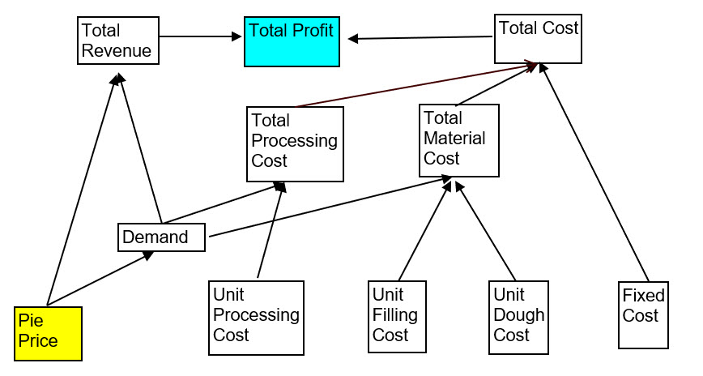
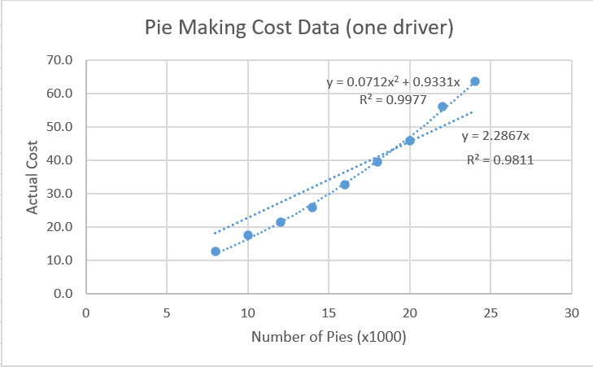
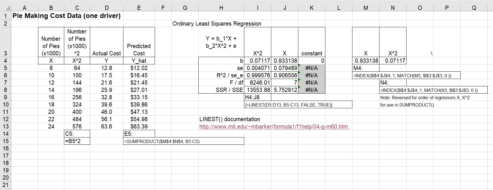
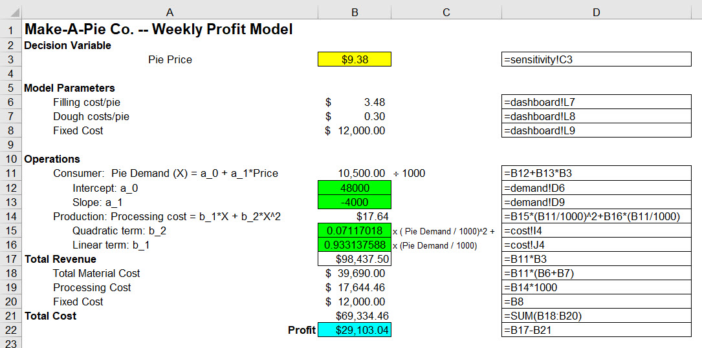
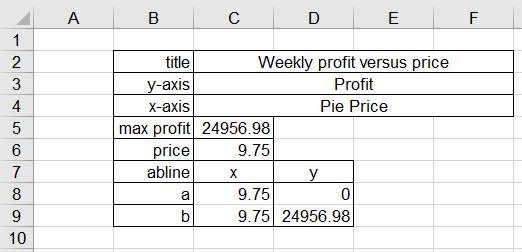

Chapter 1 Tortuous Pie-making in the Sky
1.1 Spreadsheets? Really?
Yes, emphatically! George Gilder says we should waste transistors (that is chips).1 Gilder makes the fairly obvious point that we must use transistors (lots of them in an integrated circuit) or go out of business. They are ubiquitous. And arrived everywhere in a very short amount of time to boot. If you do not use them you lose control of your cost structure. Anything you build will be too expensive, too heavy, too big, too slow, too lacking in quality.
The same idea goes with Michael Schragge builds on Gilder’s ironic hyperbole about transistors and analogizes that we should “waste simulations.”2 If we do not so-called waste prototyping, rapid development, simulating potential problems, solutions, we will also go out of business. We must simulate until we drop! The alternative is that we will miss the one opportunity to improve or the one error that eliminates us. Of course the point he makes is that it iss not a waste, rather we should never shy away from working the problem, simulating the art of the possible.
So what is the value added of a prototype, which is simply a working model? It is about information, and information is a surprise, a deviation from a trend. Schragge believes that testing a hypothesis just gets us to the point of saying we seem, in probability that is, to have a trend going on here. In the world of growth, opportunity, error and ignorance, having a trend is barely the beginning of our journey. It is the deviation from the trend that matters.
Are we still talking about spreadhseets? Schragge quotes Louis Pasteur: “Chance favors the prepared mind.” Here the prepared mind is a product of simulations, the rapidly developed prototypes, Fleming used agar and discovered penicillin – completely unexpected! Dan Bricklin developed the spreadsheet IBMDOS/Apple IIe program Visicalc.3 As a complete surprise this product was able to be used by millions of people to rapidly simulate other products and services. Steve Jobs credited Visicalc with the success of the Apple IIe and the Macintosh in 1985. IBM credited it with the success of the PC. Now people had a reason to buy the PC.
Using Visicalc we were able 40 years ago to build practical, plottable, usable option pricing models which transparently allowed us to visualize the calculations directly. Financial analysts built interactive pro forma balance sheet, income statements, and cash flow statements fed from managers’ expectations, scenarios, and expert knowledge of markets. These models literally paid for themselves in days, not years. The main criterion for innovation success has always been the customer’s payback, not the investors. How long did it take for the customer to recoup her investment? That’s the innovation criterion. The spreadsheet is a sophisticated scratchpad some have used to be a production ready system.
But what is the most important message? A working prototype should be a sandbox where everyone is willing to get in and play. It has at least to be durable enough to get to the first slate of useful comments and suggestions for further improvement. Development continues! Rick Lamers recently open sourced his Grid Studio spreadsheet product with deep integration with Python.
Yes, let’s play.
1.2 Questions, questions
Some questions come to mind as we begin.
What will we use the spreadsheet for? We will rapidly prototype decision support models for business.
What’s a business? We will use a working definition: an organization of resources to reach a common goal. Yes, there is more to it than that, but it’s good enough for now.
What’s a decision, you might ask? Again we will us a working definition for the moment: a commitment by people to deploy resources over time and space in support of a common goal. Decisions work inside of interconnected processes. They are the levers that allow, or refuse, inputs to become outputs. All very abstract, but we are on course to build out our use of a spreadsheet as a prototyping tool.
What’s a model? Any model is a human being’s abstraction from reality. We will not get into the cognitive, epistemological, ontological, or even methodological questions that might arise from this definition. Even saying a word like sweet is an abstraction of a perception, given experience with tasting anything, and tantalizingly informed by furtive imaginations. But one point must be made. A model is not reality. One more thing, knowing is not just taking a look. After all that’s why we build models. But again a decision is the result of an affirmation, a judgment. Gosh, it gets epistemological really fast. We need to visit the Philosophy Department next and soon. Back to our geocentric way of thinking.
1.3 Count the errors of our ways
Spreadsheets are dangerous when in the wrong hands, with stubby fingers, bad memories, lack of structure, ramshackle governance, in short, poorly engineered. Here are some indicative horror stories from the European Spreadsheets Risk Interest Group.
Covid: Test error ‘should never have happened’: 2020-10-05. The health secretary has said a technical glitch that saw nearly 16,000 Covid-19 cases go unreported in England “should never have happened”. The error meant that although those who tested positive were told about their results, their close contacts were not traced. By Monday afternoon, around half of those who tested positive had yet to be asked about their close contacts. The error was the use of an old Excel format. Counts exceeded the number of rows in the spreadsheet. Labour said the missing results were “putting lives at risk”.
AG: State overpaid Stroudsburg PA nearly $500K: 29/07/2019. The district used cumulative mileage totals rather than running calculations on a sample average for vehicles, which resulted in the district significantly over reporting total mileage data, causing the subsidy overpayments. In some cases the spreadsheet was double counting total days for some of the activity runs. -Emailed spreadsheet contained private data in ‘hidden’ columns: 22/2/2017. A company employee mistakenly emailed a spreadsheet full of 36,000 coworkers’ personal details to his spouse in November, 2016, including Social Security numbers and dates of birth, all in hidden columns.
SolarCity adviser Lazard made mistake in Tesla deal analysis: 2016-09-01. Lazard Ltd (LAZ.N), the investment bank that advised SolarCity Corp (SCTY.O) on its $2.6 billion sale to Tesla Motors Inc (TSLA.O), made an error in its analysis that discounted the value of the U.S. solar energy company by $400 million, This was the result of a computational error in certain SolarCity spreadsheets setting forth SolarCity’s financial information that Lazard used in its discounted cash flow valuation analyses.
Report identifies lack of spreadsheet controls, pressure to approve, at JP Morgan: 18 January 2013-01-13. See pages 131-132 of the JP Morgan Task Force Report “…further errors were discovered in the Basel II.5 model, including, most significantly, an operational error in the calculation of the relative changes in hazard rates and correlation estimates. Specifically, after subtracting the old rate from the new rate, the spreadsheet divided by their sum instead of their average, as the modeler had intended. This error likely had the effect of muting volatility by a factor of two and of lowering the VaR.” As reported in [“A tempest in a spreadsheet”] (http://ftalphaville.ft.com/2013/01/17/1342082/a-tempest-in-a-spreadsheet/?) Lisa Pollack comments that “On a number of occasions, he asked the trader to whom he reported for additional resources to support his work on the VaR model, but he did not receive any. Also it appears that he (had to?) cut a number of corners, which resulted increased operational risk and artificially low volatility numbers … pressure was put on the reviewers to get on with approving the model.”
Could many of thesse errors have been performed in a programming language like Visual Basic for Applications (underlies Excel spreadsheets), or R, or Python? Sure and they have. What they share in common are violations of basic software engineering design principles and practices, let alone well known and implemented risk management and governance.
Of course Dilbert might calm us all down a bit. Then again, maybe it isn’t the spreadsheet after all, but the strange idea about ant farms that someone might come up with in the first place.
1.4 Prevailing recommended practices
We might refrain from using the term best practices as that means, literally, there are no possibilities of improvement. At best, then, we might see some aspirational leading practices. here are some at least recommended practices for our consideration. They are based on this selection.
An all time favorite still Read and Batson’s IBM spreadsheet modeling design practices from way back in 1999.
1.4.1 Do not ever do this
Hard code data in a formula
Take the word spread in spreadsheet literally
Put more than one major task or component on a worksheet
Guess the length or dimensions of any array, and everything in a spreadsheet is an array;
Use more than 3 IF-THEN-ELSE’s nested in a single formula
Calculate parameters inside a chart or presentation table
Use Excel as the standard system of record database
Pretend you don’t know what a named range is.
1.4.2 Instead practice these
Work flow. Paper and pencil the work flow for a model first. Document the scope, timing, user and system requirements, testing criteria first. Put data in one worksheet, task 1 in another, task 2, in another, and so on, plot set-up, table set-up in other separate worksheets, end-user presentation in another worksheet. Treat the spreadsheet model like a 3rd normal form data base. But for goodness sake avoid using Excel as a system of record data base if you can!
Definitions. Use named ranges to refer to any cell or array by name. Refer to cells and arrays where appropriate with INDIRECT(). This is what programming languages do. Each object has a unique name and scope of operations (e.g., integer, floating point, character data, class, slot) with descriptions in comments, Named ranges has some of this capability to document what the cells are and a bit of what they are meant to do. Named ranges are effectively row and column absolute addresses where cell data resides in worksheets. Attributes of cells include value, format, data type.
Testing. Be ready to test the model. Paper and pencil calculations should yield the same calculations for bits of the model, often called a unit test. But does the whole model stand up to scrutiny? A testing plan would stretch every assumption even to the breaking point of the model. Such stress testing and system testing are critical to the credibility both of the model and the model-builder in the eyes of the consumer of the model’s results. The resiliency of models to changes in assumptions can be tested by installing form controls to sensitize results to those changes.
There are many more good practices, and even more bad ones. We should keep working, testing, improving, and communicating with one another about our various attempts at implementation. Perhaps a step in the right direction is the extensive use of FORMULATEXT() to display formulas in cells. Documentation can lead to immediate improvements.
1.5 Pie-in-the-Sky
Simone Tortiere makes pies: gluten-free, vegan, full of micro-nutrients. She targets a highly under-served niche market: nutritarians. She has a dilemma. She would like to expand her business. The problem is what price should she charge? Simple economics usually indicates the price that yields the highest profit.
Here is some data at hand Tortiere finds credible enough to use along with some questions to which she wants answers.
Value capture. Make-A-Pie Co. generates profit by combining two purchased ingredients (fruit and dough) into pies, processing the pies (cooking, packaging, & delivering), and selling them to local grocery stores. What are the determinants of profit?
Processing. Make-A-Pie keeps track of weekly processing costs. The table below shows expense for various output levels. What is the relationship between output volume and expense?

Demand. Make-A-Pie has also experimented with demand elasticity. At a price above $12, there will be no demand for her pies, but demand increases by about 4,000 pies per week for each dollar price decrease below $12. For example, at a price of $10 Make-A-Pie could expect demand of 8,000 pies. What is the average relationship between price and revenue?
Price. Savory vegetable filling costs $3.48/pie, and sprouted flour dough costs $0.30/pie. Overhead expenses are $12,000 per week. At what pie price will Make-A-Pie maximize profit? At what price will Make-A-Pie break even?
Sensitivity. Tortiere believes in her estimates, but she well knows that markets, property tax assesssments, customer sentiment, and supplier costs can change. How sensitive is weekly profit when any of the drivers of cost and revenue change?
Tortiere muses further. She needs to understand if her business is profitable over the next few years and at what very sticky price should she charge her customers. She has already invested $2.5 million.
- Multi-period value. Suppose that savory vegetable filling cost rises by 7% per year, and sprouted dough rises (pun included) by 5%. Overhead expenses rise by 2% per year. Prices will also rise by 2% per year. At what year 1 pie price will Make-A-Pie maximize profit across a 3 year horizon if the business is worth $2,500,000 today?
Tortiere hires us to help her with her analysis. She asks us what is the first thing we should do?
1.6 Where’s the paper and pencils?
First and foremost we map the requested analysis. We use a decompositional technique called an influence diagram, as developed by Howard and Matheson. The diagram extends the ideas behind a similar structure called a decision tree, both of which are examples of directed acyclic graphs and causal inference, e.g., Judaea Pearl’s work Software such as dagitty can greatly aid visualization of causal relationships among decisions (e.g., price), criteria (e.g., profit), and drivers (e.g., unit costs). After all of that consideration here we will simply use boxes and arrows.

We identify the decision as price in the yellow box and the decision criterion profit in the blue box. Price, unit and fixed costs are somehow exogenous since they do not depend on any variable, but they do determine other variables. Unit and fixed costs will be assumed and thus condition the rest of the variables. Price on the other hand is the one variable for which we solve. Literally we will pick a price and see what happens to profit.
Tortiere agrees with our approach and analysis. She sees that her efforts to understand how the demanded volume of pies sold depends on her pricing decision. But she wants to get at how volume influences, conditions, cost. We move to the next task, the cost structure.
1.7 Cost and volume
Make-a-Pie’s experience with expense and volume provides some inside into the way volume, as determined by number of pies sold, will influence, condition, cost. Here is a scatter plot with linear and quadratic lines fit to the data.4

Right-clicking one of the blue observations will reveal a dialogue box with a Trendline feature. This produced the lines and the equations. We can check these results by hand, but let’s use the LINEST array function instead in the cost worksheet.5
 The FALSE setting in LINEST sets the intercept to zero in the Ordinary Least Squares (OLS) estimation. Predicted costs will be used in the profit calculation using volume demanded as an input to the quadratic cost structure. We also use the INDEX-MATCH combination to wrangle coefficients for use in the SUMPRODUCT calculation.6
1.8 Demand analysis
Tortiere’s experiments with pricing provide valuable windows into customer preferences. Even a simple change of price can reveal a conjecture about the range of preferences. In this situation we need to anchor the demand analysis around two important points:
the give-away price and volume, and
the no-show price where volume is just zero.
The give-away price is zero at least. The volume associated this lowest price becomes the intercept of a down-ward sloping straight-line demand curve in price. The increment downward is estimated using a simple rise-over-run rate of change of volume with respect to price.

At a price above $12, there will be no demand for her pies, but demand increases by about 4,000 pies per week for each dollar price decrease below $12. For example, at a price of $10 Make-A-Pie could expect a demand of 8,000 pies in a week. The intercept is then \(12 \times 4000 = 48000\). The formula in D9 confirms the negative slope \(-4000\). Thus we have a demand equation which serves as a schedule that will feed both revenue and processing cost.7
1.9 Weekly profit
Weekly profit is only a snapshot of performance. It is defined as total revenues minus total costs with various drivers defined mapped in the influence diagram. The calculations depend on assumptions provided by another worksheet, the finale of the model, the dashboard. Cost and demand volumes derive from estimated algebraic relationships we already peaked at.

Price comes from a sensitivity analysis we have yet to review and is an input from that analysis of the profit maximizing price. Three unit and fixed cost assumptions also wander in from the dashboard. The user moves slide bars to choose those levels.
1.10 Profit sensitivity to price
Perhaps the most important activity in the building of a model, and the reason for a model in the first place, is to understand how model elements are sensitive to one another. Not emotionally of course as our models are robots and golems. BUt really there is no one so-called right answer! It is a range of answers dependent on the instructions we gave to our spreadsheet robots. Yes, the decision maker has to sign the contract, write a cheque, hire (or fire) a designated vendor, employee, partner. But before these decisions are cast in stone, we owe it to ourselves to waste simulations, again to recall George Gilder and Michael Schrage’s ironic hyperbole.
In this graph we use data tables (Data > What if > Data Table) to take the column of possible prices and run them against the profit model. For each price (yes this is a for loop) the data table calculates a new profit.8

A plot of price and profit is more than a little instructive. Here is a setup worksheet with titles, additional calculations and lookups. Shown only is the sensitivity table setup. Any other plots in this workbook have a setup grid devoted to their charts.

1.11 Lo and behold
This is what we have been waiting for. We must first notice the modular nature of this spreadsheet application. The dashboard worksheet interacts with all but the questions worksheet, at least in this iteration of the application. All Simone Tortiere needs to do, after paying our invoice, is to put the cursor on the slide bars that help her understand how the profit maximizing price changes with changes in the unit and fixed cost assumptions.9

Is there too much in this dashboard? Perhaps the cost and demand equationscould be left to their respective worksheets. We might replace those with the underlying assumptions of both structures. We leave that for another day and week.
What price is best? All we have to do is live with whatever assummptions we make and read the dashboard.
1.12 References and endnotes
See Gilder’s comments here. He goes on to a further idea: build billions of 1-chip interconnected systems (our mobile phones that are really computers) and waste chips that way instead of manufacturing billion chip data centers. According to Moore’s law we will eventually get to a near zero-cost chip.↩
Here is a taste of Schrage’s points of view. He compiled the “wasting prototyping” paradigm into this book a couple of decades ago.↩
Here is a summary of his work. His innovation with Visicalc was to transform 20 hours of work into 15 minutes, almost of play at the time. Visicalc first ran on the Apple IIe. Dan is working on a web-based WikiCalc these days.↩
See WInston (2019), Chapter 54 Charting Tricks is a one-stop destination for a variety of charts, including the scatter plot here.↩
WInston (2019) discusses several array functions and formulas in Chapter 91 and LINEST at page 578. LINEST is discussed here as well along with references to array functions. To enter an array function: 1. Select a results range. Some functions require the results range to contain a certain number of columns or rows. A an abridged results range will not show all of the function results; a results range that is longer than the function’s capability will display error messages in some cells. Check the documentation on the specific function for information about the required size and shape of the results range. 2. In the results range you selected, type in the equals sign, the array function keyword, and the argument(s) or argument range(s), in parentheses. 3. To enter the function DO NOT PRESS ENTER! Instead press SHIFT and CONTROL together and while they are pressed down then press ENTER. (If you simply press ENTER, the array function will return the #VALUE! error.)↩
See WInston (2019) Chapters 4 and 5 for INDEX-MATCH and Chapter 59 for multiple regression.↩
WInston (2019) Chapters 87 and 89 provide further approaches to demand analysis.↩
WInston (2019) Chapter 17 deftly covers this vast topic. I do not like to use data tables too extensively and without further some thought. They are dynamic. Whenever you change a cell, the table recalculates. That’s fine for as simple data table as we have here. The problem is when we have a 10000 by 100 table. It simply take a while to update. The easiest way to change the calculation mode is on Excel’s Formula ribbon. In the Calculation grouping, on the right side of the ribbon, is a drop-down button for Calculation Options. We choose an option that works best for the current file. There are two other important buttons in the Calculation grouping. Calculate Now (equivalent to pressing function key F9) updates the entire workbook. Calculate Worksheet updates only the current sheet, which is much faster in a large file.↩
WInston (2019) Chapter 27 has a discussion on the implementation of user form controls. These are located on the Developer ribbon at the Insert button. Here are directions to show this ribbon in your workbook.↩